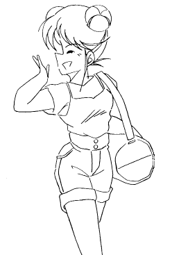

コンコン――
｢長官、三枝です｣
｢入りたまえ｣
三枝が「長官」と呼ばれた男に、書類を渡していく。
｢ふむ、部隊の再編の方は順調に進んでるようだな｣
｢はい、機体と操縦者の追加に伴ない、整備やサポートスタッフにかなりの負担をかけましたが、これで何とかなりそうです｣
｢よろしい、機体もそうだが操縦者たちのサポートやケアも重要だ。しっかり頼むぞ｣
｢了解しました｣
｢ところで三枝君、実は来週防衛軍の創立記念式典がある｣
｢はい、存じております｣
｢観閲式の後で幹部たちが集まって、ささやかだがパーティーが開かれる予定なんだが、ヴァルキュリアのパイロットたちにもぜひ参加してもらいたいのだ｣
｢彼女たちに？｣
｢幹部連中は男ばかりでね、花を添えるためにもぜひ。……もちろんパーティードレスはこちらが全額負担するし、必要ならアクセサリーも用意するぞ｣
｢長官……うちのパイロットはコンパニオンじゃありませんっ！！｣
機甲天女 ヴァルキュリア
Scramble4：｢爆裂！！ 一瞬に全てをかけて｣
作：ライターマン
横須賀、ヴァルキュリア基地――
ブラインドの隙間から夕日が差し込む司令室。入り口の扉が開き、二人の女性が入ってきた。
両人とも軍服に身を包んでおり、胸にはそれぞれ色の違う武器を持った天使のエンブレムが縫い付けられている。青いエンブレムを着けた方の女性は２４、５歳くらい、そしてもう一人の黄色のエンブレムを着けた方は２０歳前の少女。どちらも軍人としては、かなり若い。
彼女たちは司令室の主＝三枝比奈子（さえぐさ・ひなこ）に向かって敬礼する。
｢報告します。真野、羽谷野両名、『特別任務』を終了しました｣
｢よろしい、これより羽谷野は石野と共に待機任務に入り、真野は私に代わり部隊の指揮を担当せよ｣
｢｢了解｣｣
黄色のエンブレムの少女＝羽谷野美姫（はやの・みき）が退出し、司令室は、三枝と青色のエンブレムの女性＝真野弥生（まの・やよい）の２人きりになった。
彼女たち、真野と羽谷野はヴァルキュリアの操縦者だ。
「ヴァルキュリア」とはインセクター――宇宙の彼方より飛来した昆虫に似た形の文明の破壊者――に対抗するために作られた人型兵器の名称である。
女性を思わせる曲線的なボディの機体は、同調により操縦者と直接リンクして制御する。操縦者のイメージどおりに動くヴァルキュリアは抜群の機動性を誇り、操縦者の特性に合わせてあらゆる武器を使いこなす。
しかしこの人型兵器は、かつてインセクターと遭遇した別の星系からもたらされた技術で作られているため、いくつかの問題も抱えていた。
そのひとつは、機体と同調するには特殊な因子が必要で、その該当者が極めて少ないこと。
政府が徴兵制を復活させ、１７歳の男女に徴兵検査を義務付けている理由の一つは、このヴァルキュリアを操縦できる「適格者」を探し出すためである。しかし、現時点での適格者――つまりヴァルキュリアの操縦者は、先ほど司令室を訪れた真野と羽谷野、それと水無月葉夜（みなづき・はや）、夜須山芽衣子（やすやま・めいこ）、石野真紀（いしの・まき）の五人のみ。
またヴァルキュリアは、その他にもいろいろな問題点や謎の部分がある。それ故、ヴァルキュリア部隊は由来や操縦者の素性など、その存在以外については全てトップシークレットとなっている。
真野が三枝に近づき、持っていた紙袋のひとつを渡した。
｢はい、これお土産｣
｢お土産？｣
｢今日の『お仕事』は通信販売の商品カタログ掲載の写真撮影だったろ？ スポンサーの部長がえらく機嫌がよくてね。商品の一部をくれたんだよ｣
真野の言う｢お仕事｣とは、ヴァルキュリア操縦者特有の｢特別任務｣の事である。
先述したように、ヴァルキュリア部隊はその全てがトップシークレットとなっている。操縦者を含めたスタッフについても外部には秘密であり、基地への出入りは秘密の通路を使用している。
……とはいえ、彼らにもプライベートな時間は必要だ。そのためダミーの会社や身分が用意され、ヴァルキュリアの操縦者は全員、芸能プロ｢エンジェルローズ・プロモーション｣の専属スタッフとしての地位を与えられている。
つまり、彼女たちの表向きの職業は「モデル」なのである。
もちろんそれは偽りの姿なのだが、舞い込む仕事のいくつかは実際にやらないとその存在が怪しまれてしまうので、「特別任務」として持ち回りでモデルの仕事を受けているのである。
｢へえ、珍しいわね。何を貰ってきたの？｣
｢まあいいから、開けてごらん｣
先程の報告のときとはうってかわり、リラックスした表情で親しげに会話をする２人。
三枝が紙袋を受け取って中を開けてみると、入っていたのは香水や口紅をはじめとする化粧用品一式であった。
｢最近研究と部隊指揮が忙しくて思いつめてたんじゃないか？ たまにはいつもと違う化粧をして、気分転換というのもいいんじゃないかと思ってね｣
｢でも……｣
｢比奈子は綺麗になりたくないのか？ 俺は綺麗になった比奈子を見てみたいな｣
そう言って真野は三枝の顎を軽く持ち上げて優しく微笑みかける。
｢もう、山野君ったら｣
三枝も表情を崩し、二人は微笑みあう。
基地内でこうした様子は滅多に見せないのだが、このときの二人には女性同士であるにもかかわらず、「恋人同士」の雰囲気が漂っていた。
それもそのはず、真野の以前の名前は山野康人（やまの・やすと）――れっきとした男性であり、三枝の恋人でもあった。
ヴァルキュリア開発の責任者だった三枝と付き合っていた山野は、偶然にも「適格者」としての素質を持っていたためテストパイロットとして開発に参加、その過程で機体との同調係数が８０％を超えた時に異変が生じた。
操縦者は機体との同調によりヴァルキュリアを制御するが、逆に機体の受けた影響も操縦者に反映される。
それは通常、センサーからの情報を直接脳内に感じたり、機体の受けたダメージを痛覚として受け止めたりする程度である。しかし操縦者が男性の場合、同調がある一定のレベルを超えて｢シェアリング｣を起こすと、機体の影響が肉体そのものにまで及ぶ。
山野は同調の影響により身体が変化、そのショックで気を失ってしまう。そして開かれた操縦席には山野の姿はなく、代わりに一人の女性が気を失っていた。
これがヴァルキュリア運用における最大の問題点、｢『シェアリング』による男性の女性化｣の最初の事例であった。
女性になった山野の姿に三枝は驚愕し、激しく動揺した。
しかし山野は最初の頃は戸惑ったものの、自責の念にとらわれていた三枝を優しく包み込んだ。以来、山野は「真野弥生」となったあとも、三枝の部下として、パートナーとして、そして女友達（？）として彼女を支え続けているのである。
二人の顔がゆっくりと接近し……
｢ねえ……あなたが持ってる方の紙袋は？｣
｢ああ、これは自分用の化粧品。……うふふ、あたしも一応女の端くれだから｣
そう言うと、真野はにこっと笑みを浮かべて小首をかしげた。｢比奈子も今から研究室に行くんでしょ？ ね、そこで一緒にお化粧しない？｣
「…………」
真野は二人きりのときに限って、ときどきこんな風に女のふり（？）をして三枝をからかうことがある。
｢あ……あなたって人はっ！！｣
三枝の握った拳がぶるぶると震えていた。
｢水無月、夜須山、待機任務終了。準待機へ移行｣
｢｢了解｣｣
ヴァルキュリア操縦者の待機室で、四人の女性が緊張した面持ちで、二人ずつ向かい合って敬礼する。だが、形式通りの手続きを終えると、彼女たちの表情はすぐにリラックスしたものになった。
｢じゃああたしはこれで、後はよろしくね｣
緑色のエンブレムの少女＝夜須山が笑顔で羽谷野に声をかけ、羽谷野も笑顔を返す。黒色のエンブレムの女性＝水無月は無言で机の上の書類を片付けている。
基地はこれから夜間警戒態勢に入る。いつインセクターが襲ってくるか判らない状況では、基地の機能を一時たりとも止めるわけにはいかないのだ。
今日の夜間待機は羽谷野と石野。新入りの石野にとっては初めての夜間待機であった。
水無月と夜須山は宿舎であるマンションへと戻るが、敵襲があれば秘密の地下通路ですぐに駆けつけることができるようになっている。
水無月は既に待機室を出たが、夜須山の方は羽谷野に近づき小声で訊ねた。｢……ねえ美姫、あんたが持って帰ってきた『お土産』、かなり大きいけど一体何が入ってるの？｣
真野と同様、羽谷野もスポンサーから通信販売のサンプルをもらって帰ってきた。それも真野の物より何倍も大きい紙袋を二つもである。
羽谷野は｢実は……｣と言いながら、夜須山に耳打ちする。
｢えっ！？ そんなものが通信販売で？｣
｢ええ、結構人気があるらしいの｣
｢げっ！ 信じられない……｣
年齢が同じでヴァルキュリア部隊への参加もほぼ同時期ということもあり、羽谷野と夜須山の仲はかなりいい。
羽谷野も真野と同じように、以前は男性であり、対して夜須山の方は生来からの女性である。
だが真野と三枝とは違い、こちらの二人の仲は「女同士の親友」といった感じである。夜須山も羽谷野がかつて男だったことは知っているが、それを特に意識することなく、同僚、または女友達として接しているようだ。
なんといっても羽谷野が完全に女になりきっていて、とても以前は男だったようには見えないのだ。
｢……でもさあ、なんでそんなもの二つも持って帰ってきたわけ？｣
｢ふふふ……｣
夜須山の問いに、羽谷野は含み笑いを浮かべながら、視線を石野の方へと向けた。
｢…………ふあああ｣
午前０時を回ったオフィスで、石野の口が大きく開く。
初めての夜間待機ということで緊張していた石野だったが、溜まっていた書類を片付けると特にやることもない。
マニュアルなどを読んで時間をつぶしてはいても、緊張を維持するのもそろそろ限界といった感じである。
｢ふふっ｣
｢あっ、すいません｣
羽谷野の笑い声に、石野はあわてて頭を下げる。
｢いいわよ、真紀ちゃんはまだ慣れてないんだから｣
｢あの……その『真紀ちゃん』というのは止めてもらえませんか？ ……女の子みたいだから｣
｢でも真紀ちゃん、女の子でしょ？｣｢うっ、それは……そうなんですけれど……｣
石野は顔を赤らめながら、俯いた。
石野もまた、ヴァルキュリアの操縦者となる前は、幾田真樹夫（いくた・まきお）という男性だった過去を持つ。
実を言えば、五人の操縦者の中で生粋の女性なのは、夜須山ただ一人なのだ。
幾田は最近見出された「適格者」で、防衛軍で基礎訓練を受けた後にヴァルキュリア基地を訪れるよう命令を受けた。
適格者が男性だった場合、ヴァルキュリアとの同調適正があることが判っても、すぐに操縦者になるわけではない。
なんといっても元に戻る方法がいまだに不明な現時点では、ヴァルキュリア操縦者になることは、「男としての人生」を捨て去ることに等しい。そのため適正試験の後に事情を明かし、改めて操縦者となることに同意するかどうか決断してもらう予定であった。
しかし幾田の場合、説明と同意が行なわれる前に｢それ｣が起きてしまった。
ロールアウトしたばかりの新型機を使っての同調試験中、同時多発侵攻で他の四機が出撃した直後、故郷である鎌倉に出現したインセクターを迎撃するため、幾田は無断で出撃してしまい、そこでヴァルキュリアとシェアリングを起こしてしまったのだ。
幾田はその後三日間眠り続け、目が覚めたとき、自分の身体が女性になっていることに驚愕し、混乱した。
そのまま「石野真紀」という女性の名前と身分を与えられ、ヴァルキュリアの操縦者となったのだが、予備知識も覚悟もなくいきなり女性になったため、いまだに自分自身の身体と、女性としての生活に戸惑う毎日を送っている。
｢ねえ、真紀ちゃん｣｢だからその真紀ちゃんというのは……まあいいですど、何か用ですか？｣
溜息をつきながら訊ね返す石野。すると羽谷野は、机の引出しから真新しい小さな箱を取り出した。
｢時間つぶしにトランプでもしない？｣
｢えっ？ でも今は勤務中ですよ？｣
｢いいのよ。どうせ他にやることないでしょ？ みんなも暇つぶしにいろいろやってるわ｣
｢どんなことをしてるんですか？｣
｢あたしや芽衣は通販のカタログを見たり、おしゃべりしたりってところね。葉夜さんはストレッチや座禅、リーダーの弥生さんは読書やクロスワードやってることもあるけど、司令が基地内にいるときは一緒にいることが多いわね｣
｢へえ、そうなんですか……｣
｢で、ときどきは待機中の人間同士でこうしてトランプなんかもやってるわけ。囲碁をやることもあるけどね｣
｢囲碁……ですか？｣
｢あら、結構奥が深いし時間もつぶせるのよ。でも真紀ちゃん、囲碁はできないでしょ？｣
｢はい｣
｢じゃあポーカーでもやってみましょうか？ お金を賭ける訳にはいかないから、碁石を１０個ずつ持って全部無くなった方の負け――ってことでどうかしら？｣
｢ええ、いいですよ｣
｢それじゃあ、始めるわよ｣
羽谷野はトランプの封を切り、カードを取り出した。
｢真紀ちゃん、どうする？｣
｢じゃあ二枚交換で……ベット｣
そう言って石野が碁石を一つ前に出すと、羽谷野も｢コール｣と宣言し、同じように碁石を前に出す。
｢ショウダウン｣
２人の手札が広げられる。
｢僕は５のスリーカード｣
｢あたしは１０と７のツーペア、あなたの勝ちね｣
羽谷野は肩をすくめ、中央に置いてあった四つの碁石を石野のほうに押し出す。そしてテーブルの上のカードを集めて、シャッフルを始めた。
これで石野の碁石が１２個に対し、羽谷野が八個。一進一退のゲームが続いていた。
｢あの……羽谷野さん｣
石野が少しためらいがちに、カードを切っている羽谷野に声をかけた。
｢はい？｣
｢羽谷野さんってその……男――だったんですよね｣
一瞬、手の動きを止めるが、羽谷野はしなを作って石野を見返した。
｢……いやねえ、レディにそんな事尋ねるな・ん・て♪｣
｢す……す、すいません。羽谷野さんが僕と同じ……だなんて……信じられなかったんで｣
狼狽してしどろもどろに弁解する石野を見て、羽谷野は吹き出しながら笑った。｢……ぷっ、いいわよ気にしないで。確かに男だったのは事実だったんだから｣
｢じゃあ本当に？｣
｢ええ、一年半前まであたしは胡葉矢幹夫（こばや・みきお）という男だった。そしてあの日……｣
｢おめでとう胡葉矢君、あなたは神聖なるヴァルキュリアの操縦者に選ばれましたっ。……さあ皆さん、拍手を｣
パチパチパチパチ。
｢な、なんなんだあんたたちは？｣
｢……さあ胡葉矢君、今日から我々と一緒に天駆ける乙女となって共に戦いましょう｣
｢い、いやだ、僕は女にはなりたく…………うわあああっ！！ や、やめろおおおぉ〜っ！！」
…………………………………………
｢こうしてあたしは女になり、ヴァルキュリアのパイロットとしてインセクターと戦うことになったの｣
｢……嘘ですね、思いっきり｣
人差し指を立てて得意気に話す羽谷野を、石野はジト目で睨んだ。
……もちろん今の話は嘘である。
徴兵制度で召集されて基礎訓練を終えた胡葉矢は、ヴァルキュリア基地で適正試験を受けた後、司令室に呼び出され……実際には、そこで以下のようなやり取りがあったのだ。
｢胡葉矢君、テストの結果、あなたにはヴァルキュリア操縦者の適正があることが判明しました｣
｢……そ、そうですか、三枝司令官｣
｢あまり嬉しくはなさそうだね？｣
｢ええ、真野三佐。僕はもともと軍人っていうのが大っ嫌いなんです。……ほら、あれでしょ？ 顔とか体中泥だらけにして、沼地やジャングルを這いずり回ったり――｣
｢そんな昔のテレビや映画じゃあるまいし……｣
｢それに、筋肉ムキムキになってランニングシャツとアーミパンツ姿で『だあありゃっしゃあああああっっ！！』とか叫んだり……｣
｢それはネット小説の読みすぎだと思う｣
｢どうしてそんなこと知ってるの？ 山――真野三佐｣
｢それはえーっと……と、それよりどうする？ 全然乗り気じゃないみたいだけど｣
｢仕方ないわね。今回は別に女性の適格者も見つかったことだし、一応例のことを説明だけしてみて、拒否するのなら話はこれまでとしましょう｣
｢そうだな｣
10分後――
｢そんな……ほ、本当なんですか？ その話｣
三枝と真野の話に、胡葉矢は裏返った声を上げた。
渡された資料を持つ手が、ぶるぶる震える。
｢ああ、 俺も水無月も『シェアリング』を起こしたことで身体がこんな風に女性化した。……君もヴァルキュリアの操縦者になれば、必ず同じことになるだろう。でも、今までの人生を捨て去るに等しい訳だから、拒否すればこの話はなかったこと――｣
｢……や、やりますっ！！｣
｢｢…………えっ！？｣｣
いきなり椅子から立ち上がって詰め寄ってきた胡葉矢に、三枝と真野は思わずあとずさってしまった。
｢僕、志願します！ 地球の平和とみんなの笑顔を守るためにヴァルキュリアの操縦者になりますっ！ ならせてくださいっ！！｣
｢あ、え、えっと、あ――あのぅ……？？？？｣
こうして胡葉矢はヴァルキュリアのパイロットに志願した。
そして一ヶ月近い訓練を経た、ある日――
｢うっ……｣
｢気がついた？ 胡葉矢君｣
｢ここは……医務室？｣
「ええ。あなたはコクピットから運び出されて、ほぼ二日半の間眠っていたわ。コクピットで何が起きたか……憶えてる？」
｢……そうだ、僕はヴァルキュリアの新型機で同調試験をやってて……同調係数が８０％を超えて、機体が自分の身体のように感じて……｣
｢胡葉矢君、あなたはヴァルキュリアとのシェアリングに成功しました。新型機は黄色にカラーリングされ、以後はヴァルキュリアイエローと呼称されます」
三枝はそこで、一度言葉を区切った。「そして、あなたの身体は――｣
ベッドの上で横になっていた胡葉矢は、その言葉にはっとなると、右手を恐る恐る自分の胸に近づけていった。
その手は自分の胸板の手前で、ふにっとしたものをつかむ。……同時に胸から伝わる、くすぐったい感覚。
｢……あ、ある｣
間髪入れず、左手を股間の方へと――
｢ないっ。本当に……。……あ、あの……か、鏡、あります？｣
｢ええ、用意しているわ。驚かずに……というのは無理だろうけど、気を落ち着けて見なさいね｣
三枝は真野が抱えていた鏡を受け取り、胡葉矢のそばに置く。
胡葉矢は上半身を起こして、その鏡を覗き込む。鏡の中には自分によく似た、可愛らしい少女の姿が映っていた……
｢これが……僕？｣
呆然と呟いて肩を小刻みに震わせる胡葉矢の様子に、三枝と真野は顔を見合わせた。
｢やっぱりショックだったみたいね｣｢そりゃあ、頭の中で想像するのと実際に体験するのとでは――｣
｢……やった、やったああぁぁっ♪♪｣
｢｢……え？｣｣
突然嬌声を上げて自分自身を抱きしめる胡葉矢に、二人の目が点になった。
｢僕……ううん、あたし女の子になったのよね？ ……あ、あらやだっ、声も変わってる……」
赤らめた頬に両手を当てて身をくねらせていた胡葉矢は、唖然としていた三枝の手を取り、照れたような笑みを浮かべた。
「嬉しい……夢がかなったわ。……ありがとうございます、三枝司令｣
｢は……はあ｣
いきなり感謝の言葉をかけられ、間の抜けた返事をする三枝。だが胡葉矢はその手をあわてて放すと、自分の胸元をかき抱いた。
｢やだっ、ノーブラじゃない。……すいません、ブラジャーあります？｣
｢あ、ああ……ここに一応用意してあるけど｣
真野から小さな包みを受け取った胡葉矢は、着ていたパジャマを脱いで上半身裸になる。
しばらく自分の胸の膨らみをいとおしそうに撫で回し、そして包みを開いて中のブラジャーを取り出すと、前かがみになってそれを胸元に当てた。
｢……あ、あれ？ 留まらない？｣
手を背中に回して悪戦苦闘する胡葉矢。三枝はクスリと笑いながらその後ろに立つと、代わりにブラジャーのホックを留める。
｢それから肩のストラップを調整して……これでどう？｣
｢あ、ありがとうございます。……うわあ、本当に女の子だわ｣
｢と、ところで胡葉矢君、その言葉遣い――｣
｢練習したんです｣
｢｢練習？｣｣
｢ヴァルキュリアの操縦者になると女の子になれるっていうから、ドラマやアニメを見て女の子の言葉遣いや仕草を真似て……そうだ、女の子になったら『幹夫』って名前変でしょ？ だから美姫――美しい姫って書いて『美姫』って名前にしたいんです｣
そう言うと、胡葉矢は近くのメモにその名前を書いて見せた。
｢美姫、ね……わかりました、すぐに手続きを行ないます。名字はこっちで『羽谷野』って決めてあるんだけど、いいわよね？｣
「はい」
胡葉矢の女性としての新しい名前は既に決まっていたのだが、本人の希望があるのなら変更もやぶさかではない。
そして胡葉矢＝羽谷野は嬉しそうに言葉を続けた。
｢今からあたしは羽谷野美姫――ね。……うん、せっかく女の子になったんだから、いろいろおしゃれとかしてみたいわ。基地の近くにブティックがあったから早速行ってみなくちゃ……それからお化粧品もそろえて……その前に髪型を何とかしなきゃ……きゃあ♪ やるべきことが山積みだわ♪｣
｢｢あのー、もしもーし｣｣

｢いやー、あの時はびっくりしたなあ。まさか自分から女になりたいっていう適格者が出てくるなんてね……でも今の羽谷野を見れば、納得――って感じだけど｣
｢そうよねえ……でもまあ、それはそれでいいんじゃない？ ……さあ、次はあなたの番よ｣
｢うっ、俺はその……｣
｢まさかあたしにだけやらせといて、自分は逃げる気？｣
｢い、いや、俺は本来待機任務中だから、そろそろ羽谷野たちのところへ……｣
｢山・野君っ！！｣ ｢…………はい｣
｢あたし女の子にあこがれていたの。男だったときは背が低くて痩せていたから、いつも苛められていた。それで『男女』なんてからかわれ続けているうちに、もし自分が男じゃなく、本当の女の子だったら……って思うようになったの｣
｢…………｣
｢そうしたらこの話でしょ……あたし速攻で志願したわ。実際に女の子になったときは、もう天にも昇るような気分だったし♪｣
｢はあ……｣
嬉しそうに話す羽谷野の表情を、石野は複雑な気分で見つめていた。
｢女の子っていいわよね。きれいな服着て、お化粧して……真紀ちゃんもそう思わない？｣
｢い、いえ、僕はそういうのは……｣
なりたくて女性になったわけではない石野は、羽谷野の言葉に首を横に振る。
｢興味ないの？｣
｢はい｣
｢ああそうか、真紀ちゃんはまだ、『あれ』を経験してないもんね｣
｢あれ？ あれって何です？｣
｢……生理の事よ、せ・い・り｣
他に誰もいないにもかかわらず、耳元でささやかれた羽谷野のその言葉に、石野は飛び上がらんばかりに驚いた。
｢せせせせ生理っ！？ で、でもあれって女の子の……｣
｢そうよ。それがどうかしたの？ 今の真紀ちゃんなら不思議でも何でもないでしょ？｣
羽谷野に訊き返されて石野は言葉を失う。確かに今の石野の身体からすれば、それが起きても不思議ではなかった。
｢シェアリングで女の子になったばかりのときはまだ身体が未成熟だから、最初に訪れるのは二、三ヶ月くらい後なんだけどね。……その後は嗜好や感じ方が女の子に近づくみたいよ｣
｢ええっ！？｣
｢最初はぎこちなかった女言葉もその頃から自然に出るようになったし、甘い物が好きになって、男の子にも興味が出てきた。……真紀ちゃんもいずれそうなるわよ♪｣
｢そんな……う、嘘ですよね？ 僕をからかおうとして……｣
引きつった顔でそう尋ねた石野に、羽谷野は意味深な顔で笑いながら答えた。
｢さあ……どうかしらね｣
｢でももったいないわ。真紀ちゃんって磨けば絶対に光るタイプだから、もっとおしゃれとか楽しまないと……そうだ！｣
そう言うと、羽谷野は部屋の隅に置いてあった紙袋の一つを石野に手渡した。
｢……ねえ、これ着てみない？ 今日の撮影のときにもらったものなの｣
石野は何気なくそれを受け取り、中の包みを開けてみた……が、そこにあるものを理解した途端、動きがフリーズした。
そこに入っていたのは、紺の布地の上下一体となったワンピースだった。
ヒラヒラしたスカートの裾や襟元、袖口にレースの縁取り、そしてエナメルの靴に白のオーバーニーソックス、白地でやはりレースの飾りのついたエプロンに、カチューシャがセットで入っていた。
｢こ、これは……｣
｢そ、いわゆる『メイド服』。……ね、着てみましょうよ。絶対似合うから。それとも真紀ちゃんにはこっちの色の方が好みかしら？｣
にこやかに微笑みながら羽谷野がもう一つの紙袋から取り出したのは、やはりメイド服……ただしこちらは紺ではなく、ピンクの生地である。
石野は激しく首を横に振った。はっきり言ってどっちも嫌であった。
｢えーっ、どうしてー？｣
文句を言いながらすねた表情になった羽谷野を見ると、以前彼女が男だったことが信じられなくなってしまう石野だった。
｢い、今は待機任務中ですよ｣
｢じゃあ、終わったら着てくれるのね？｣
｢い、いや、それは……｣
石野は疲れた頭をフル回転させて、逃げる口実を考える。だが、先に提案を口にしたのは羽谷野の方だった。
｢じゃあこうしない？ 二時間以内にポーカーであたしが勝ったら、真紀ちゃんはどっちかのメイド服を着る。逆に真紀ちゃんが勝つか時間切れになったら、もうこの話はしない｣
｢え？｣
｢ハンデとして、あたしの今の持ち石から六個をあなたに上げるわ｣
つまり石野が１８個、羽谷野が二個の状態から始めようと言っているのだ。
（たった二個しかないなら、すぐに勝負がつくんじゃないか？）
いくら何でも、この状態から負けることはないだろう……そう判断した石野は、羽谷野の提案に頷いた。
ところが……
｢さあ……次でいよいよ決着、かしらね？｣
｢くっ……｣
満面の笑みを浮かべる羽谷野。対して石野は追い詰められた表情を浮かべ、テーブルの上のカードを凝視していた。
それまでほぼ互角だった勝敗の天秤が、｢メイド服｣の話を機に、徐々に羽谷野の方に傾いていった。
特に｢絶対に勝った｣と思っていたフルハウスを４カードで返されてからは、もう一方的だった。現在のペースはほぼ一勝三敗……しかも勝てそうなときは、羽谷野が早々に降りてしまうので、石野の持ち石はその数を急速に減らしていった。
残っている石はわずかに一個。集めたカードを切る石野の手が、わずかながら震えていた。
カードを配り終えて、石野は自分の手札を確認する。
（８の、スリーカード）
悪くない手だが、油断はできない。石野が羽谷野の持っているカードをじっと見ていると、彼女はにやりと笑った。
｢気になる？｣
そう言うと、羽谷野は自分のカードを一枚ずつ、表を見せながらテーブルに置いていく。
（Ｊのスリーカード！！）
息を呑む石野。
｢どうする、交換する？｣
石野は頷いて二枚のカードを交換する。このままでは勝てないのだから当然だ。
運良く８のカードか、同じ番号のカードを引けば……
祈るような気持ちで石野はカードを引き……そしてそれを見た！！
（……ああっ！！ くそっ！！）
石野が心の中で絶望の叫びを上げたその時、
ヴイィィ――ッ！！ ヴイィィ――ッ！！
基地内に警報のサイレンが鳴り響いた。
｢敵襲！？｣
羽谷野の表情が一気に引き締まる。
｢急ぎましょう、早く！！｣
そう言って石野も立ち上がり、格納庫へ向かって走り出したが、その前に自分の手札を伏せて他のカードとかき混ぜていくことも忘れなかった。
格納庫にある赤いヴァルキュリア――ヴァルキュリアレッドのコクピットに入った石野が管制室と交信すると、モニターに真野の顔が映し出された。
指揮任務を引き継いでいる真野は、三枝が戻ってくるか他に待機する操縦者がいなくなるまでは、管制室で指揮することになっている。
｢状況は？｣
｢静岡県伊東市沖に反応、数は推定で５０、現在高度５０００メートルより……降下中だ｣
説明の最後の部分で顔をしかめた真野に、石野は首を傾げた。
モニター越しではよく判らないが、実は真野の顔にはいつもより入念に化粧が施されている。
そのため真野は、さっきから違和感感じまくりなのである。
（比奈子の奴……）
笑いをこらえるオペレータを軽く睨みつけながら、今管制室に向かっているであろう三枝に心の中で文句をつぶやく真野。
それでも彼女は入ってくる報告と地図を見ながら冷静に状況を分析し、そして決断を下した。
｢羽谷野、目標は、約１０分後に伊豆半島と大島の中間点に降着後してから移動を開始すると思われる。……やれるな？｣
｢了解｣
羽谷野の乗るヴァルキュリアイエローが機体を固定していた拘束アームを外され、発進位置へと移動する。
｢ハッチ開け！！ 警報鳴らせ！！ ヴァルキュリアイエロー、発進スタンバイ！！｣
発進位置上部の天井が開き、注意を促す警報が鳴らされる。
｢真野リーダー、一機だけで大丈夫でしょうか？｣
ハンガーに固定されたままのヴァルキュリアレッドから石野がモニター越しに訊ねるが、真野はニヤリと笑って答えた。
｢そうか、石野はまだ羽谷野の戦い方を見てなかったな。……大丈夫だよ、彼女なら｣
その声とほぼ同時に、羽谷野の機体から通信が入った。｢ヴァルキュリアイエロー、発進準備よし｣
｢よし、発進！！｣
光の羽を広げ、ヴァルキュリアイエローは大空へと一直線に飛び立った。
｢目標確認、伊東市に向かって移動中｣
レーダーで目標を確認した羽谷野が、基地に報告を入れる。
ヴァルキュリアイエローはそのままインセクターの群れに突っ込む……ことはせず、横をかすめて先回りをしようとする。
五、六体のインセクターが集団を離れ、ヴァルキュリアイエローに接近してきた。
ヴァルキュリアイエローは前方に立ちふさがろうとしたインセクターに向かって、肩部のガトリング砲を発射する。
正確無比な砲撃は、目標を蜂の巣にして撃墜する。さらに下に潜り込もうとした敵を、脚部のミサイルポッドから発射したミサイルで撃ち墜とす。
この間、ヴァルキュリアイエローの進路やスピードが変わることは、まったくなかった。
機体の各部にいくつもの兵器を装備しているヴァルキュリアイエローにとって、このくらいの数の敵を迎撃することなど造作もないことだ。
ヴァルキュリアイエローはインセクターの一群を追い抜くと、そのまま伊東市へと向かった。
伊東市沿岸部上空――
先に到着したヴァルキュリアイエローが、伊東市の市街地を背に空中に浮かんでいる。
夜が明けかけて明るくなり始めた空を背に、インセクターの集団がヴァルキュリアイエローに……そして伊東市に迫る。
ヴァルキュリアイエローは腰部のリニアガンを取り出した。
腕部装甲下からロケットランチャーが迫り出し、ミサイルポッドの蓋が開く。肩部のガトリング砲が前方を向いた。
羽谷野は目を閉じ、意識を集中して機体との同調係数を上昇させた。
モニターに前方の景色とインセクターの群れが映っているが、羽谷野はそれを見ていない。彼女は直接リンクした機体から、それらを｢感じ取って｣いるのだ。
無数ともいえる照準サイトがモニター上に現われ、各個に移動していく。
それらは一見無秩序に動いているように見えながら目標を正確に捉え、次々にロックオンを示す赤い表示に変わっていく。
そしてモニターの中が赤色で埋め尽くされた時、羽谷野が小さく呟いた。
｢発射｣
轟音とともに、ヴァルキュリアイエローの全ての兵装が火を吹いた。
ロケットランチャーから発射されたロケットが集団中央部に固まっていたインセクターをまとめて吹き飛ばし、ミサイルが周辺部の目標に命中し爆発する。
爆発の隙間にいたインセクターをショートバレルのリニアガンやガトリング砲で打ち落としながら、ヴァルキュリアイエローは次々にロケットとミサイルを発射していく……
勝敗は一瞬で決した。
わずか数秒の砲撃の後、生き残ったインセクターはただの一体も存在していなかった。
静かになった伊東市に朝日が昇り始め、ヴァルキュリアイエローの機体を照らしていった。
｢す……すごい｣
待機していたヴァルキュリアレッドのコクピットで戦闘の様子を見ていた石野はその光景に言葉を失っていた。
ふだんの羽谷野からは、とても想像できない凄まじい戦い方であった。石野は意外と思う反面、さすがはヴァルキュリアのパイロット……と感心し、彼女の評価を改めるのであった。
しばらくすると、管制室に到着した三枝からの通信が入った。
｢羽谷野さんお疲れ様、直ちに帰投して下さい。現在新たな敵影なし、現時点をもって警戒態勢を解除します。石野さんもお疲れ様でした｣
その言葉に石野は大きく息を吐いて安堵すると、コクピットのハッチを開いた。
｢お疲れ様です。すごい戦い振りでしたね、さすがです｣
基地へ戻ったヴァルキュリアイエローから降りてきた羽谷野を、石野が出迎えて言葉をかけた。
｢あら、ありがとう｣
そう言って羽谷野が嬉しそうに笑う。
｢相変わらず派手な戦い方よねえ｣
戦闘開始の少し前に基地に到着し、やはり羽谷野の戦いぶりを見ていた夜須山が、少し呆れた表情で微笑みながら、羽谷野にスポーツドリンクを渡す。
渡されたスポーツドリンクを少し飲んだ羽谷野は、それを手に持ったまま待機室へと歩き出す。
そしてにこやかに微笑みながら、後ろをついてきた石野と夜須山に振り向いた。
｢……さあ、これで夜間待機も終わり。あとは真紀ちゃんにメイド服を着てもらうだけね｣
石野の表情が一気に青ざめる。｢ええっ！！？？ で、でも勝負はまだついて――｣
｢あら、ちゃんとついてたじゃない？ あなたの手持ちの札はハート、スペード、ダイヤの８。交換して引いたカードはクローバーの２とダイヤのＫ。それだとあたしの手札には勝てないでしょ？ だからあたしの勝ち｣
｢ど、どうしてそれを……｣
自分の持っていたカードを正確に言い当てられたことに驚き、石野は思わずその場に立ち止まる。
｢真紀……あんたさっきの戦闘見たでしょう？ ５０近い移動する物体の動きを正確に捉える動体視力と瞬間記憶能力。トランプの裏の模様の微妙な違いを憶えることなんか、美姫にとっては朝飯前なのよ｣
石野は唖然となった。
羽谷野たちとの距離が開き、慌てて急ぎ足で追いかける。｢そんな……途中までは、ほぼ互角だったんですよ｣
石野のその言葉に、夜須山は「やれやれ」といった表情で首を横に振り、肩をすくめた。
待機室に到着する。三枝司令や真野、そして夜須山と同じく召集されて基地に到着していた水無月が、三人を出迎えた。
｢美姫、この中からさっき真紀が持っていた手札を選んで見せてやって｣
机の上に伏せられたまま積まれたトランプのカードの山を指差す夜須山。羽谷野は少し苦笑いをしながら、カードの中から一枚一枚選んでは裏返していく。
スペードの８、ダイヤの８、ハートの８、ダイヤのＫ、クローバーの２……
迷いなくカードを選び、めくっていく羽谷野を、石野は呆然とした表情で見ていた。
｢基地内で美姫とトランプで勝負しようなんて人は誰もいないわ。だって美姫には相手の手札が全部『視えて』いるんだから｣
それはそうだろう。特にポーカーでは相手の手札を知っていると知らないとでは大違いだ。
｢つ、つまり、それって……インチキ……｣
｢あら、違うわよ。後ろから覗き込んだ訳でもマーキングをした訳でもないからインチキじゃないわ｣
石野は言葉に詰まる。確かにそのとおりなのだが……
と、ここにきて、ようやく石野は全てが羽谷野の筋書き通りであったことに気がついた。
時間をもてあまし気味になったところで声をかけ、言葉巧みに勝負を持ちかけられる。そして自分は上手くのせられて徐々に熱くなり、そして気がついたときには……
｢というわけで、早速これに着替えてね｣
そう言って、石野にメイド服一式が入った紙袋を渡す羽谷野。
救いを求めて周りを見るが、夜須山は完全に羽谷野の味方。真野は、｢ま、戦闘は終わったんだしいいんじゃない？｣と肩をすくめ、三枝はしょうがないといった感じで苦笑いをしている。
石野が水無月に目を向けると……彼女は踵を返し、待機室のドアを開けたところで振り返った。
｢……カメラ、取って来る｣
石野はがっくりと項垂れると、その場に崩れ落ちた。
羽谷野と夜須山はそんな石野を両脇から支えると、そのまま引きずって更衣室へと歩き出した。
２０分後――
｢ほら真紀、もっとにこやかに笑って。せっかくの美少女が台無しよ｣
｢あ、あははは……｣
メイド服に着替えて嬉しそうに微笑む羽谷野と、引きつった笑みを浮かべる石野の姿がファインダーの中に収まっていた。

（Scramble4：終わり）
おことわり
この物語はフィクションです。劇中に出てくる人物、団体は全て架空の物で実在の物とは何の関係もありません。
あとがき
どうも、ライターマンです。
ヴァルキュリア第４話｢爆裂！！ 一瞬に全てをかけて｣いかがだったでしょうか？
今回の戦闘はヴァルキュリアイエローの一人舞台でした。
フルウエポンアタックはＭＯＮＤＯさんからイメージをもらったときに浮かんだイメージを参考にしました。ま、アニメファンならお約束でしょうか？
そして主人公の真紀ちゃん、今回は乗せられてはめられて最後はメイド服ってな感じになっちゃいました。（笑）
メイド服は男のロマン……かな？
次は恐らくヴァルキュリアブラックと水無月の出番の予定です。
それではまた。
戻る
□ 感想はこちらに □